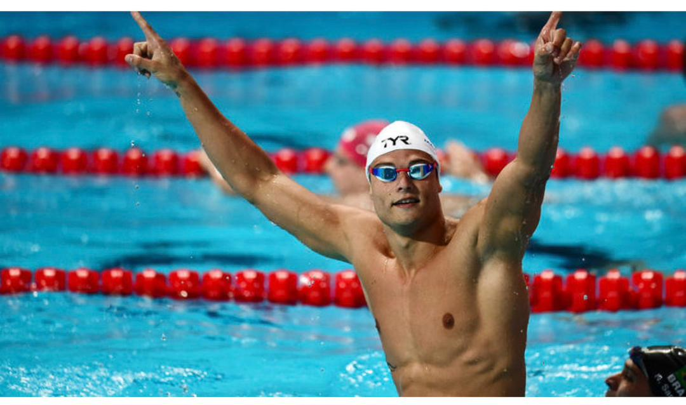

Plongez dans l'univers de la natation : histoire, techniques, légendes et compétitions internationales.
Explorer les nagesL'eau est apaisante, elle nous apprend la persévérance et la liberté.
La natation est l'un des sports les plus complets, pratiqué depuis la préhistoire. Discipline olympique depuis 1896, elle allie endurance, technique et grâce.
Les quatre piliers de la natation sportive sont :
Aujourd'hui, la natation est pratiquée par plus de 150 millions de personnes dans le monde, de la piscine au grand bleu.

Sport complet qui muscle tout le corps sans impact sur les articulations
Réduit le stress, améliore le sommeil et libère des endorphines
Excellent pour le système cardiovasculaire et l'endurance